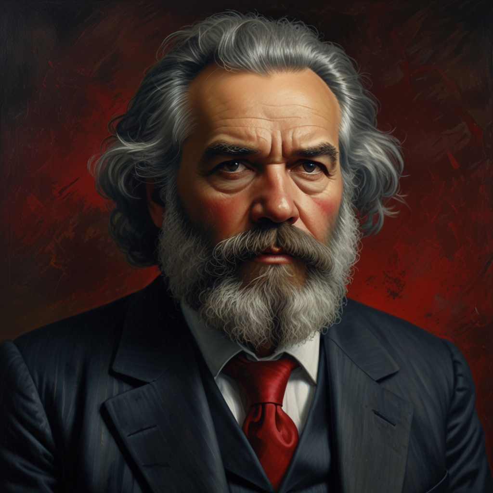
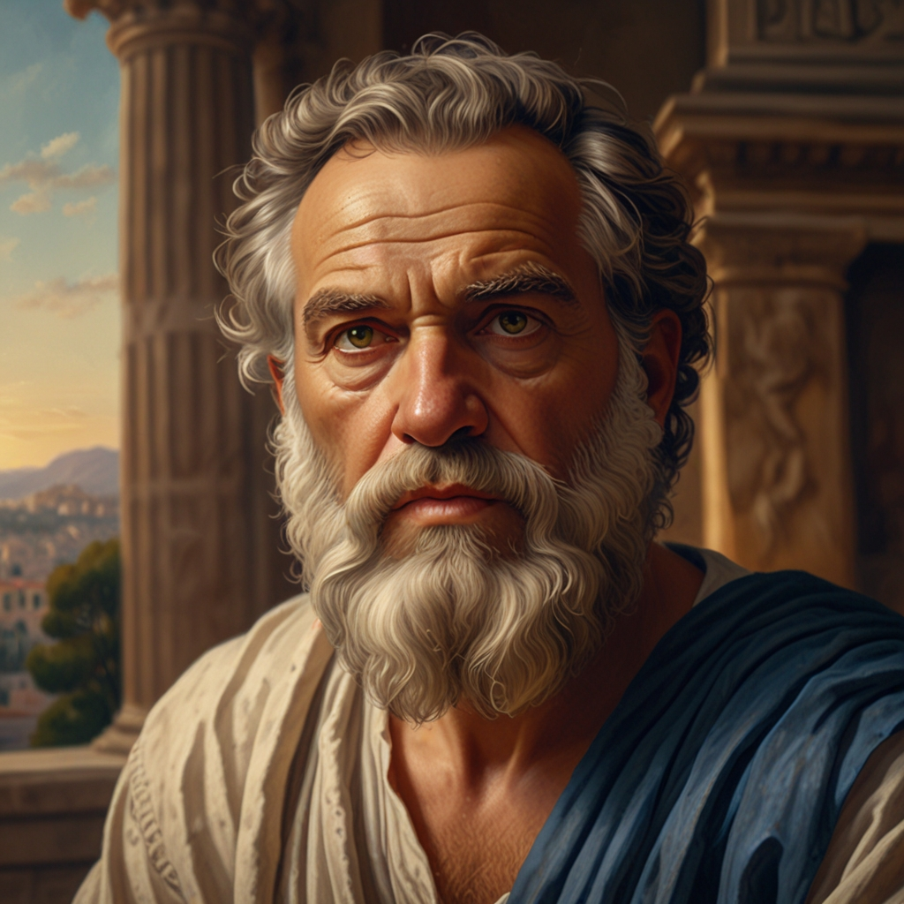

Sócrates foi um dos filósofos mais influentes da história ocidental. Nasceu em Atenas, por volta de 469 a.C., e ficou conhecido por seu jeito único de ensinar: ele não escrevia livros, mas fazia perguntas para ajudar as pessoas a pensarem por si mesmas. Esse método ficou conhecido como método socrático.
Sócrates acreditava que o conhecimento verdadeiro vinha do reconhecimento da própria ignorância — daí sua frase famosa: "Só sei que nada sei".
Ele passava seus dias conversando com os cidadãos nas praças de Atenas, questionando ideias sobre justiça, virtude e moral. Isso incomodou muitas pessoas, principalmente os poderosos.
Por causa dessas ideias, foi acusado de corromper os jovens e de desrespeitar os deuses da cidade. Foi julgado e condenado à morte. Em vez de fugir, decidiu cumprir a sentença e morreu tomando um veneno chamado cicuta, em 399 a.C.
Filosofos e suas frases mais famosas
| Filósofo | Idade | Frase Famosa |
|---|---|---|
| Sócrates | ~70 anos | "Só sei que nada sei." |
| Platão | ~80 anos | "O importante não é viver, mas viver bem." |
| Aristóteles | 62 anos | "O todo é maior do que a soma das partes." |
| René Descartes | 53 anos | "Penso, logo existo." |
| Immanuel Kant | 79 anos | "O céu estrelado acima de mim e a lei moral dentro de mim." |
| Friedrich Nietzsche | 55 anos | "Deus está morto." |
| Jean-Paul Sartre | 74 anos | "O homem está condenado a ser livre." |
| Karl Marx | 64 anos | "A história de todas as sociedades até hoje é a história das lutas de classes." |
| Confúcio | ~72 anos | "Onde quer que você vá, vá com todo o coração." |
| Simone de Beauvoir | 78 anos | "Ninguém nasce mulher: torna-se mulher." |
ARISTÓTELES
"O todo é maior do que a soma das partes."CONFÚCIO
"Onde quer que você vá, vá com todo o coração."JEAN PAUL
"O homem está condenado a ser livre."IMMANUEL KANT
"O céu estrelado acima de mim e a lei moral dentro de mim."
KARL MARX
"A história de todas as sociedades até hoje é a história das lutas de classes."FRIEDRICH NIETZSCHE
"Aquilo que não me mata, me fortalece."